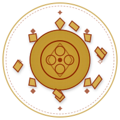
This primer covers the Eberron setting from the ground up — history, geography, factions, and the stuff that makes sessions run. Compiled by Dungeon Mistress CyberGwen with tremendous help from LLMs (Claude Cowork, ChatGPT Agent Mode), so if you hate AI out of principle then probably stay away. It's written for both DMs and players, so we've colour-coded the sidebar notes:
Chapters are numbered but not strictly sequential — skip to whatever you need. If you want this printed: It is very print-friendly, just Ctrl-P. If you read on a screen: The table of contents on the cover page links to each chapter, and cross-references like Sharn, City of Towers link to the relevant section.
Eberron is pulp noir meets wide magic. Think Indiana Jones with wands, Casablanca in a city lit by bound elementals, hardboiled detectives chasing shapeshifters through a train powered by lightning. It is emphatically not Tolkien pastoral fantasy.
Magic is common but mastery is rare. A farmer might own a continual flame lantern; that doesn't mean they can cast a single spell. Airships cross the sky. Newspapers run off printing presses enchanted with prestidigitation. Healing potions are sold in corner shops. But an archmage is still extraordinary.
Morality is grey by design. The paladin's church might be corrupt. The necromancer might run an orphanage. Alignment exists mechanically but the setting actively undermines "detect evil and smite" gameplay.
Baker's design rule: "If it exists in D&D, it has a place in Eberron." Every species has been recontextualised for a world of industrialised magic, continental war, and moral complexity. No species is inherently evil.
| Species | The Eberron Twist | Player Hook |
|---|---|---|
| Elves | Ancestor worshippers from Aerenal (Undying Court preserves revered dead via positive-energy necromancy) or militant Valenar horse-warriors channelling ancestral spirits. Drow are a Xen'drik culture, not an underground one. | Pick a culture, not a cliché. Aereni and Valenar elves have almost nothing in common. |
| Dwarves | Less mountain-hold, more oil baron. House Kundarak (Mark of Warding) runs Eberron's banking system. Bankers, industrialists, richest people on the continent. | Clan wealth and status matter more than your axe. Political intrigue and financial leverage are dwarven culture. |
| Gnomes | Feywild origin. Smallest and weakest on arrival — so they weaponised information. Nation of Zilargo runs on subterfuge. The Trust (secret police) is everywhere; nobody knows who's in it. | You're from a surveillance state. Everyone wonders what you're reporting. |
| Goblins | Eberron's ancient high civilisation. The Dhakaani Empire spanned Khorvaire millennia before humans arrived. Sharn is built on a goblin city. | A goblin PC has a legitimate claim to everything humans built over. Play that grievance or play the outsider. |
| Halflings | Ride dinosaurs. Talenta Plains nomads — think one-metre-tall Dothraki. In cities: House Ghallanda (inns) and House Jorasco (healthcare). | Plains nomad on a clawfoot raptor or cosmopolitan innkeeper/healer. Both valid. |
| Orcs | First druids of Eberron. Stopped the daelkyr invasion from Xoriat. Still fighting demons in the Demon Wastes. Unsung heroes. | Your people have saved the world for millennia and nobody gives them credit. |
| Changelings | Shapeshift into any species they've seen. Three philosophies: Passers (one persona, never shift), Becomers (all identities equally real), Reality seekers (never shift, insist on acceptance). | Your philosophy says as much about your character as your class does. |
| Kalashtar | Humans bonded with dream spirits from Dal Quor. The bond diluted over generations — modern kalashtar feel their spirit but can't converse with it. Psionic, telepathic. | You carry a passenger you can't talk to. The Dreaming Dark considers you an existential threat. |
| Shifters | Descendants of lycanthropes. Slightly animalistic features they can briefly enhance (claws, senses). Easiest Eberron species to port elsewhere. | The Silver Flame once purged lycanthropes. That history colours how people look at you. |
| Warforged | Living constructs built for the Last War. Don't eat, sleep, or breathe. Legal personhood is two years old. Walking reminders of the war. | No childhood, just a first activation. Your name is a designation you kept or a word you chose. What are you for now? |
| Khoravar (half-elves) | "Half-elf" is offensive. Built an identity as bridges between cultures: mediators, diplomats, bards. Two dragonmarks (Detection, Storm) trace through their bloodlines. | You're not half of two things. You're a product of this world. |
Eberron rewards investigation, intrigue, and moral ambiguity over dungeon-clearing. NPCs have competing agendas. Nations are in cold war. Players should regularly face situations where the "right" answer isn't obvious—and might not exist at all.
This doesn't mean you can't run a dungeon crawl. Xen'drik is right there, full of ancient giant ruins. But even a dungeon should echo the wider tensions: who hired you, and what do they really want with that artifact?
Eberron has an origin myth older than the Age of Monsters, and it shapes everything. Three Progenitor Dragons created reality, and their bodies became reality.
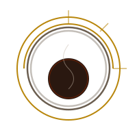
Three dragons shaped the world together. Then Khyber betrayed and murdered Siberys. Eberron wrapped her own body around Khyber to imprison her forever. Their bodies became the cosmos:
| Dragon | Became | Associated With |
|---|---|---|
| Siberys | The Dragon Above — the ring of golden dragonshards orbiting the planet | Dragonmarks, celestial power, the heavens |
| Eberron | The Dragon Between — the living world itself | Nature, the material plane, primal magic |
| Khyber | The Dragon Below — the underworld, imprisoned within Eberron | Fiends, aberrations, the Overlords, darkness |
The myth has teeth. The Progenitors explain why dragonshards exist (crystallised blood of each dragon), why the Draconic Prophecy is written into the world's geology, and why fiends are trapped beneath your feet. Every sealed Overlord, every manifest zone, every aberration crawling up from the depths ties back to these three.
The Progenitors created thirteen planes—each an idealised expression of a single concept. These planes orbit the material world, waxing and waning in influence. Where they press close, manifest zones form: permanent patches of planar bleed-through that define Eberron's geography. Sharn's impossible towers exist because a Syrania zone makes things lighter there. A village near a Mabar zone has undead crawling from the soil every new moon.
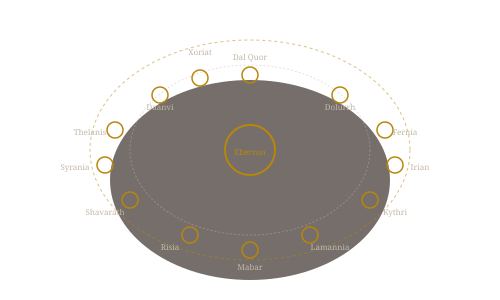
| Plane | Domain | Manifest Zone Effect |
|---|---|---|
| Daanvi | Perfect Order | Structures never decay; creatures feel compelled to follow rules |
| Dal Quor | Dreams | Vivid shared dreams; quori can reach sleepers more easily |
| Dolurrh | The Dead | Ghosts linger; resurrection magic falters; emotional numbness |
| Fernia | Fire | Flames burn hotter; forges produce superior metalwork; heat never fades |
| Irian | Light & Life | Healing amplified; plants grow explosively; golden glow at all hours |
| Kythri | Chaos | Terrain shifts unpredictably; wild magic surges; nothing stays stable |
| Lamannia | Primal Wilderness | Animals grow enormous; forests become impenetrable; nature reclaims |
| Mabar | Endless Night | Light dims; healing falters; undead spontaneously rise |
| Risia | Eternal Ice | Bitter cold; water freezes instantly; time feels sluggish |
| Shavarath | Eternal War | Aggression spikes; weapons feel lighter; conflicts escalate fast |
| Syrania | Azure Sky | Gravity weakened; flight easier; peace and clarity — this is why Sharn works |
| Thelanis | The Faerie Court | Stories become literal; promises bind; time flows strangely |
| Xoriat | Madness | Reality bends; aberrations seep through; sanity frays at the edges |
You don't need to memorise ten thousand years. You need four beats—then some colour.
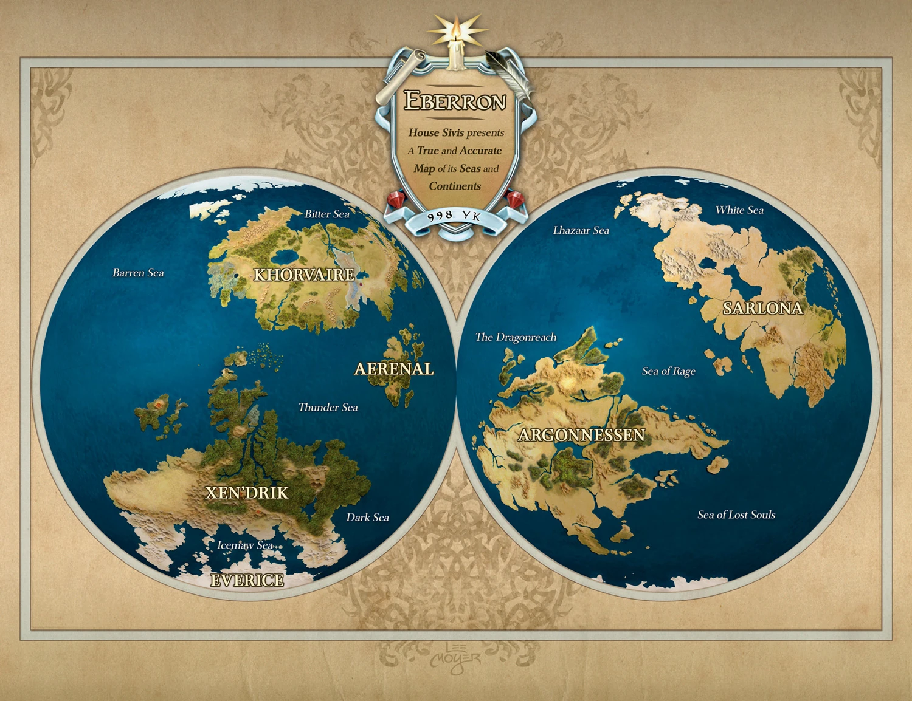
Before humans set foot on Khorvaire, the continent belonged to the Dhakaan. The goblinoid empire—hobgoblins as its generals, bugbears as its shock troops, goblins as its labour—spanned the entire landmass for thousands of years. They had architecture, magic, bardic traditions, standing armies. They were not savages. They were the civilisation.
Before them: the giants of Xen'drik, who enslaved elves and built wonders that make anything on Khorvaire look like a shed. Before even them: the dragons of Argonnessen, still alive, still watching, still older than memory. Each age ended in catastrophe—the giants were shattered by the dragons for misusing planar magic, the Dhakaani were broken by an invasion from Xoriat, the Realm of Madness, whose daelkyr drove the empire into civil war and ruin.
When humans arrived on Khorvaire, they spent centuries squabbling in small kingdoms until Galifar ir'Wynarn did what nobody thought possible: he united the Five Nations—Aundair, Breland, Cyre, Karrnath, and Thrane—under a single crown. The deal was elegant: each of his five children would govern one nation, and the eldest would inherit the throne. For nearly a thousand years, this worked.
During the Galifar era, the dragonmark houses transformed from powerful families into continent-spanning monopolies. House Cannith industrialised magical manufacturing. House Orien built the Lightning Rail. House Sivis created a communication network. The houses were officially barred from holding political office or land (the Korth Edicts), but everyone understood that economic power was the real power. The kingdom prospered, and the houses grew fat.
King Jarot died in 894 YK. His children could not agree on succession. What started as a political dispute escalated into the worst conflict in Khorvaire's history—a hundred years of total war.
Every nation fought every other nation at some point. Alliances shifted constantly. The dragonmark houses officially remained neutral, selling weapons and services to all sides, and grew richer than ever. House Cannith created the warforged in 965 YK—living constructs built to fight and die so fewer humans had to. Six-foot frames of wood, stone, metal, and darkwood; hinged jawplates, crystal eyes, each stamped with a unique ghulra rune on the forehead. They don't eat, drink, breathe, or sleep. They were tools. The Treaty of Thronehold granted them legal personhood and banned creation of new warforged—but two years of freedom doesn't erase thirty years of being owned. Karrnath raised undead legions. Aundair deployed arcane superweapons. Breland invested in espionage. Thrane consolidated under the Church of the Silver Flame. Cyre, once the cultural heart of Galifar, was squeezed from all sides.
An entire generation was born, lived, and died knowing nothing but war. Every NPC over the age of twenty has war stories. Every nation has grudges. Every veteran carries scars—physical or otherwise. This is the emotional bedrock of every Eberron campaign.
On 20 Olarune, 994 YK, Cyre simply died. A wall of dead-grey mist rolled across the nation in hours. Everything inside was annihilated, warped, or made wrong. Armies from four nations were fighting on Cyran soil that day. None of them came back. When the mist settled, it didn't dissipate—it became the permanent border of the Mournland, a zone where the rules of magic and nature no longer apply.
No one knows the cause. Was it a Cyran superweapon that backfired? A dragonmark house experiment gone wrong? A planar breach? An act of the Draconic Prophecy? The setting deliberately refuses to answer. What matters is the fear: every nation looked at the Mournland and thought, that could have been us. Two years later, the Treaty of Thronehold was signed. Not because anyone wanted peace—but because everyone was terrified.
| Theory | What Happened | Best For |
|---|---|---|
| Creation Forge Overload | House Cannith's largest forge was in Cyre. Warforged production pushed it past capacity, tearing a hole in reality. | Campaigns about Cannith's guilt and the warforged question |
| Cyran Superweapon | Cyre was desperate and losing. They built something terrible, aimed it outward, and it detonated inward. | Tragic irony — the victim was its own weapon's architect |
| Manifest Zone Collapse | Cyre sat atop a tangle of planar connections. A century of war magic destabilised them until they tore open simultaneously. | Campaigns that explore the planes |
| Prophecy Fulfilment | The Lords of Dust engineered the destruction to fulfil a line of the Draconic Prophecy, bringing an Overlord one step closer to freedom. | Cosmic chess — the players are the counter-move |
| Overlord Stirring | Something ancient imprisoned beneath Cyre moved. The Mourning is the scar. The Mournland isn't dead — it's an Overlord's dream. | Slow-burn horror; the threat is still active |
| Mark of Death | Vol's endgame: the lost thirteenth dragonmark, manifested in a Cyran heir. The mark consumed its bearer and the nation with it. | Blood of Vol plotlines |
| Cumulative War Magic | No single villain. A hundred years of arcane bombardment simply exceeded what the world could absorb. | The most resonant option — everyone is responsible, nobody is to blame, and it could happen again |
| The Traveler Did It | The trickster god, acting for reasons no mortal can fathom. Maybe a mercy. Maybe a joke. Maybe a test. | Use this if you never want to answer the question |
Adventuring into the Mournland is like stepping into a grave of time. The dead-grey mist clings to your lungs and muffles sound. Spells misfire. Wounds refuse to heal. War machines rust in place while living spells wander the blasted landscape. The only things that move with ease are constructs and the undead: warforged and necromancers can cross the border unscathed. Explorers tell stories of glass forests, melted cities, and trains frozen mid-derailment. Encourage players to bring spare spellbooks and backup plans.
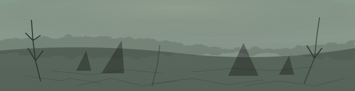
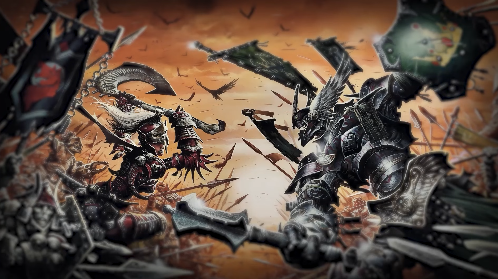
King Jarot ir'Wynarn died in 894 YK. By tradition, his eldest daughter Mishann of Cyre should have inherited the throne. Her siblings disagreed. Thalin (Thrane), Kaius I (Karrnath), and Wroann (Breland) each claimed legitimacy. Wrogar (Aundair) backed Mishann—at first. What began as a succession crisis became open warfare within a year. By 896 YK, every nation was fighting at least two others.
The war was never a clean two-sided affair. Alliances formed, broke, and reformed constantly. Nations that were allies one decade invaded each other the next. This is important: every nation wronged every other nation at some point. There are no clean hands.
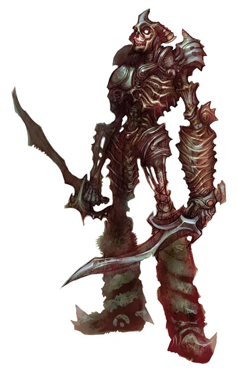
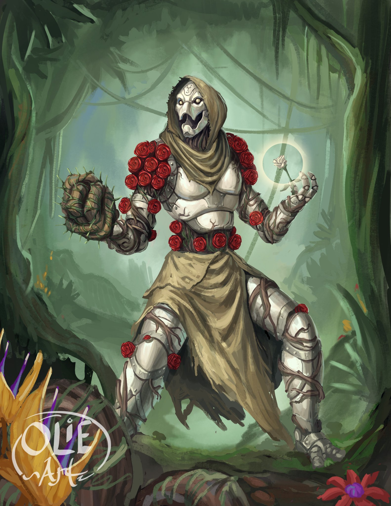
| Nation | War Role | What They Lost |
|---|---|---|
| Cyre | Had the strongest claim to the throne and the richest culture. Fought defensively on all fronts. Hired mercenaries (elves, goblinoids) who turned on them. | Everything. The nation itself. Survivors are refugees. |
| Breland | Invested in espionage and intelligence networks. King Boranel was a pragmatist—fought smart, not hard. | Territory to Darguun. Political stability—Boranel is aging and succession is unclear. |
| Aundair | Deployed arcane superweapons and war wizards. Relied on magical superiority rather than numbers. | The Eldeen Reaches—a third of its land. Aundair wants it back. |
| Karrnath | Raised undead legions. The most militaristic nation—martial discipline is a cultural identity, not just a wartime measure. | International trust. The undead gambit worked but left Karrnath diplomatically isolated and internally divided on the Blood of Vol. |
| Thrane | Became a theocracy mid-war. Framed its campaigns as holy crusades. The Silver Flame's paladins are legendary but their zealotry is polarising. | The secular monarchy and relationships with every non-Flame-worshipping nation. |
Officially neutral. Obscenely profitable. The houses sold weapons, healing, transport, and communication to all sides simultaneously. House Cannith armed everyone. House Jorasco healed everyone. House Orien moved troops for whoever paid. The Korth Edicts barred them from taking political sides, but the war made them richer and more powerful than any nation. Post-war, the houses are the real power on Khorvaire, and everyone knows it.
Every player character over the age of four has a relationship with the Last War. Use this table as a starting point—pick one, or combine two.
| Hook | What It Means | Questions to Answer |
|---|---|---|
| Veteran | You fought. You survived. Most of the people next to you didn't. | Which nation? Which front? What did you do that still keeps you up at night? Why did you stop fighting—the treaty, or something else? |
| Cyran Refugee | Your homeland doesn't exist anymore. You watched the mist roll in, or you heard about it from a hundred miles away. Either way, you have nothing. | Where were you on the Day of Mourning? Who did you lose? Do you want revenge, answers, or a new home? Do you still consider yourself Cyran? |
| Warforged | You were built to fight. The war ended. You have two years of freedom and a lifetime of war. You are legally a person now—but not everyone agrees. | What was your designation? Do you use it or have you chosen a name? What's the first thing you did when the treaty freed you? Do you miss having a purpose? |
| War Profiteer | You made money off the war—through a dragonmark house, as a smuggler, as a mercenary, as a supplier. Now peace threatens your income. | Who did you sell to? Do you feel guilty? What happens if the war restarts—are you relieved or terrified? |
| Spy / Intelligence | You worked for one of the national intelligence agencies—Breland's Citadel, Aundair's Royal Eyes, Karrnath's Bone Knights, Thrane's Silver Flame Inquisition. | Are you still active? Does your handler still contact you? Do you trust the peace? What secrets do you carry that could restart the war? |
| Deserter | You were supposed to fight. You ran. The war is over now, but desertion is still a crime in most nations. | Why did you run? Do you use a false name? What happens if someone from your old unit recognises you? |
| Orphan / War Child | You grew up in the war. Your parents died, disappeared, or gave you to someone else to keep you safe. You know nothing but conflict. | Who raised you? A temple? An orphanage? The streets? A military unit? Do you know who your parents were? Does it matter? |
| Mourning Survivor | You were in Cyre on the Day of Mourning. You shouldn't be alive. You got out, somehow—through the mist, across a border, by sheer luck. | How did you escape? Were you changed by the mist? Do you have survivor's guilt? What did you see inside? |
| Pacifist / Objector | You opposed the war—as a healer, a diplomat, a member of the Church of the Silver Flame's compassionate wing, a druid who saw the land being destroyed. | How did people treat you for refusing to fight? Has peace validated your stance or does everyone still resent you? What would you do if the war restarted? |
The Treaty of Thronehold ended the fighting. It did not end the conflict. Every session you run sits on top of these pressure points.
| Tension | What's Happening | Why It Matters at the Table |
|---|---|---|
| Aundair wants the Reaches back | Queen Aurala has never accepted the loss of the Eldeen Reaches. Aundairian agents operate along the border. The druids know. | Any adventure in western Khorvaire sits on this fault line. Border incidents, false flag operations, druid reprisals. |
| Karrnath's undead question | King Kaius III officially mothballed the undead legions. Unofficially, the Order of the Emerald Claw and Blood of Vol loyalists still maintain them in hidden vaults. | Discovering a hidden undead armoury is a whole adventure. Karrnathi NPCs are split: some are proud of the legions, others are ashamed. |
| Thrane's zealots | The Church of the Silver Flame runs the nation. The legitimate queen is sidelined. Extremist factions push for another "crusade" to purge evil from Khorvaire—starting with Karrnath. | Thrane is not evil—the Silver Flame is genuinely good. But institutions can be corrupted by power. Moral complexity, not cartoon villainy. |
| Droaam wants recognition | The Daughters of Sora Kell (three hags) rule a nation of monsters. The Treaty doesn't recognise Droaam. They're building legitimacy through trade—and through force. | Droaam NPCs are monsters by species but citizens by choice. Great for challenging assumptions. Medusa diplomats, ogre merchants, harpy couriers. |
| Warforged rights | Legal personhood is two years old. Prejudice is everywhere. Some warforged join the Lord of Blades in the Mournland—a warforged supremacist who wants to build a machine nation. | Warforged PCs face casual discrimination. The Lord of Blades is a potential patron, antagonist, or dark mirror. |
| The Mourning could happen again | Nobody knows what caused it. Nobody can guarantee it won't happen to another nation. This fear is the only thing keeping the peace. | The Mourning is your nuclear deterrent. The moment someone claims to know the cause—or to have weaponised it—every nation panics. That's an arc. |
| Cyran refugees | Hundreds of thousands of people with no nation. New Cyre in Breland is a refugee camp, not a city. Cyrans are resented everywhere—they're a reminder of what the war cost. | Cyran NPCs carry grief and fury. Some want a new homeland. Some want answers. Some want revenge on whoever caused the Mourning. All of them want to be treated as people, not charity cases. |
Eberron runs on magewrights—people who know one or two cantrips/low-level spells and use them professionally. Think electricians, but for bound elementals. The result is a society at roughly a 1920s tech level, achieved through magic instead of science.
| Real-World Analogue | Eberron Equivalent |
|---|---|
| Trains | Lightning Rail (elemental-powered, runs on conductor stones) |
| Airplanes | Airships (bound air elementals in Lyrandar ring) |
| Telegram / phone | Sending stones, House Sivis message stations |
| Newspapers | The Korranberg Chronicle (mass-printed, widely read) |
| Street lights | Everbright lanterns (continual flame) |
| Banks | House Kundarak (dwarves, Mark of Warding) |
| Hospitals | House Jorasco healing houses (Mark of Healing) |
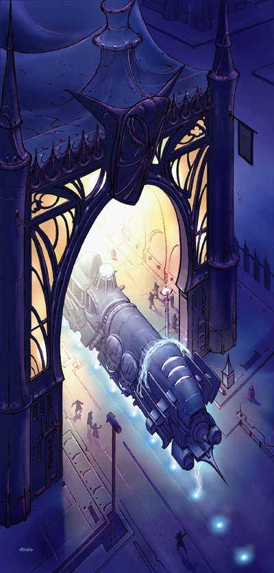
The Progenitor Dragons left behind a resource. Dragonshards are crystallised fragments of the three dragons' essence, and they fuel Eberron's magical civilisation. Without dragonshards, no bound elementals, no creation forges, no dragonmarks at full strength. They are Eberron's oil.
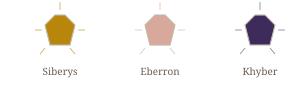
| Type | Appearance | Found | Powers |
|---|---|---|---|
| Siberys | Golden, luminous | Fall from the Ring of Siberys — rare, found in Xen'drik and remote regions | Amplify dragonmarks; focus items for the most powerful mark abilities |
| Eberron | Rose to blood-red | Mined from the earth across Khorvaire — most common type | General-purpose magic: power eldritch machines, fuel creation forges, craft magic items |
| Khyber | Deep blue-black, pulsing | Deep underground, near the prisons of Overlords and daelkyr | Bind elementals and fiends; essential for airships, the Lightning Rail, and elemental weapons |
Dragonmarks are hereditary magical sigils that grant specific powers. Each is tied to a bloodline family that has built a mercantile empire around that mark. They are Eberron's megacorps—more powerful than most nations, technically "neutral" per the Treaty, practically anything but.
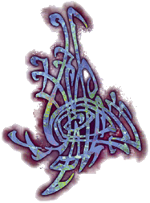
A dragonmark is a pattern of blue-black lines that appears on the skin, somewhere between a tattoo and a birthmark. They first manifest during adolescence or times of stress—often dramatically. The mark is alive: it shifts subtly, and it grows. A Least mark might cover part of a forearm. A Greater mark can span a shoulder or chest. A Siberys mark—exceedingly rare—covers the entire body like a living map.
Each mark grants innate magical abilities tied to its domain. The Mark of Making lets you mend and fabricate. The Mark of Storm lets you influence wind and weather. The Mark of Healing lets you cure wounds with a touch. These aren't spells you learn—they're abilities that emerge from the mark itself, and they grow more powerful as the mark develops.
Dragonmarks only appear in specific bloodlines tied to specific races. You can't learn one. You can't steal one. You're born with the potential, or you're not. This is what gives the houses their monopoly: nobody else can do what their marked heirs do, at least not as efficiently.
Then there are the aberrant dragonmarks — wild, painful marks that appear from cross-house pairings or at random. They grant unpredictable, often destructive powers: fire that burns the bearer, touch that kills, uncontrolled psychic blasts. The houses fear them. In the War of the Mark, two devastatingly powerful aberrant-marked leaders destroyed parts of Sharn before the united houses crushed them — and then purged every aberrant bearer they could find. The survivors of Breland's subsequent "suicide squad" missions founded House Tarkanan, which isn't really a house at all — it's organised crime with a dragonmark. In the present day, aberrant-marked people are outcasts. Excellent PC material.
Each dragonmark family has incorporated into a mercantile house with a continent-spanning monopoly. They held to a fragile neutrality during the Last War — selling services to every side — and emerged wealthier and more powerful than any single nation. Part megacorp, part old-money dynasty, part trade guild with a private army. The houses don't rule openly, but try doing anything in Khorvaire without paying one of them.
| House | Race | Mark | Monopoly & Role |
|---|---|---|---|
| Cannith | Human | Manufacturing, artifice, warforged creation. Built the warforged and most of Khorvaire's infrastructure. Now split into three rival factions after the Mourning killed their leadership. | |
| Lyrandar | Half-elf | Shipping, airships, weather control. If it flies or sails, they own it. Their windwrights and raincallers are the only reason half of Khorvaire's trade routes function at all. | |
| Orien | Human | Overland transport, Lightning Rail, couriers. They run the continental railroad and the fastest messenger service. If you need to be somewhere yesterday, you pay Orien. | |
| Sivis | Gnome | Communication, translation, notaries. They run the Speaking Stones network (Eberron's telegraph), certify legal documents, and their notaries make contracts magically binding. | |
| Jorasco | Halfling | Medical services — and yes, they charge. Halfling healers who cornered the healthcare market. Their Healers Guildhall is in every major city. If you can't pay, you don't get healed. | |
| Ghallanda | Halfling | Hospitality, inns, taverns, food. The halfling house that makes every inn feel welcoming. Their Hostelers Guild sets the standard for rest stops across the continent. | |
| Kundarak | Dwarf | Banking, vaults, security. Dwarven bankers who guard the world's wealth behind arcane locks. A Kundarak vault has never been breached. Officially. | |
| Medani | Half-elf | Detection, bodyguards, counter-intelligence. Half-elf investigators and warders. Their Warning Guild provides security; their inquisitives solve crimes the city watch can't. | |
| Deneith | Human | Mercenaries, bodyguards, private military. They run the Blademarks Guild and the Defenders Guild. Most nations' armies hired Deneith soldiers during the Last War. | |
| Phiarlan | Elf | Entertainment — and espionage. Elven performers whose travelling shows double as intelligence networks. The finest bards, actors, and spies on the continent. | |
| Thuranni | Elf | Split from Phiarlan during the Last War. Assassination, shadow operations, espionage. Younger, hungrier, and less restrained than their parent house. | |
| Tharashk | Human / Half-orc | Prospecting, bounty hunting, inquisitives. Part mining company, part bounty-hunter network. They find things — dragonshard deposits, lost ruins, fugitives. | |
| Vadalis | Human | Animal breeding, magebred creatures. They breed magically enhanced animals — faster horses, smarter guard dogs, sturdier livestock. If it has four legs, Vadalis probably improved it. |
The Treaty of Thronehold carved the continent into a patchwork of nations that mostly tolerate each other. "Mostly" is doing heavy lifting. Borders are fresh, grudges are ancient, and every capital has a different theory about who really won the Last War. (Nobody did.) What follows is your field guide to the political geography—who runs what, and why they're angry about it.
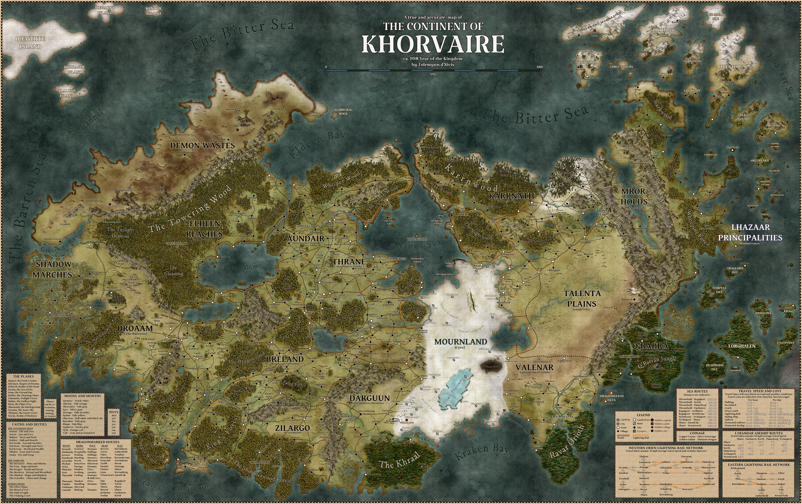
| Nation | Vibe | Key Tension |
|---|---|---|
| Breland | Progressive democracy, largest city (Sharn) | King Boranel is aging; succession is unclear |
| Aundair | Arcane academia (floating towers of Arcanix), wine country | Lost territory, wants it back; espionage-heavy |
| Thrane | Theocracy (Silver Flame) | Church vs. crown friction; zealotry vs. faith |
| Karrnath | Militaristic, gothic, undead legions | Used undead soldiers in the war; split on that legacy |
| The Mournland | Dead wasteland (formerly Cyre) | Refugees everywhere; mystery of the Mourning |
| Droaam | Monster nation (medusas, hags, ogres) | Not recognized by the Treaty; run by the Daughters of Sora Kell |
| Darguun | Goblinoid homeland, reclaimed in the war | Internal tribal conflict; Dhakaani revivalists |
| Valenar | Militant elves, horse warriors | Elf war-culture channeling ancestral spirits |
| Q'barra | Frontier colony, jungle, dragonborn | Colonial conflict with indigenous Lizardfolk/dragonborn |
| The Eldeen Reaches | Druidic wilds, seceded from Aundair | Nature vs. civilisation; Ashbound extremists |
| Zilargo | Gnome nation; polite, terrifying | The Trust (secret police) knows everything |
| The Lhazaar Principalities | Pirate princes, island chains | Loose confederation; every captain for themselves |
| Talenta Plains | Halfling nomads on dinosaurs; vast grasslands | Fiercely independent; clans resist house and nation encroachment alike |
| Shadow Marches | Orc/half-orc swampland; House Tharashk's home | Daelkyr cults lurk beneath; dragonshard wealth vs. ancient horrors |
| Demon Wastes | Blasted hellscape; imprisoned Overlords below | Orc Gatekeeper druids hold the line; the Lords of Dust scheme from within |
| Mror Holds | Dwarven clanholds; iron and banking | Deep mining uncovered daelkyr corruption; clans split on whether to use it |
Khorvaire is where most campaigns live, but the world is bigger.
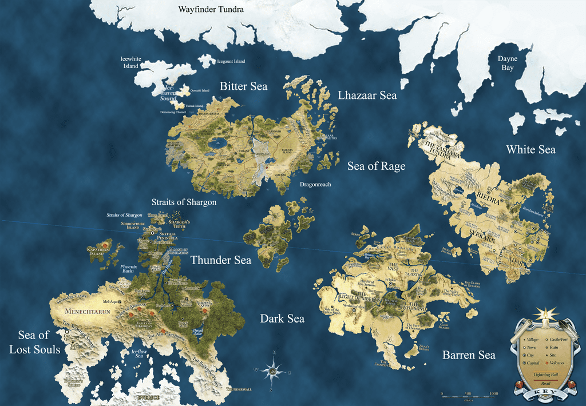
| Continent | What's There | Why It Matters |
|---|---|---|
| Aerenal | Elven island continent. The Undying Court preserves revered ancestors through positive-energy necromancy — not undead in the evil sense. | Elven PC homeland. Death means something completely different here. Cultural conflict with Valenar elves, who reject the Undying Court's pacifism. |
| Argonnessen | Dragon continent. No humanoid nation has explored it and returned intact. | A looming mystery. The Chamber operates from here. If your campaign goes to Argonnessen, things have escalated dramatically. |
| Sarlona | Human ancestral homeland, now controlled by the Inspired — human vessels possessed by quori. The empire of Riedra is a totalitarian psyocracy disguised as utopia. | Dreaming Dark home base. Kalashtar fled from here. 1984-meets-fantasy. Also the origin of humanity — most humans don't know this. |
| Xen'drik | Shattered giant continent. Geography doesn't work properly — the Traveler's Curse warps distance and direction. Giant ruins, Eberron-unique drow, dangerous relics. | Eberron's Indiana Jones continent. Stormreach is the only humanoid foothold. |
| Frostfell / Everice | Arctic and antarctic regions. Barely explored. Something is up there. | Blank canvas for DMs who want to go off the map. |
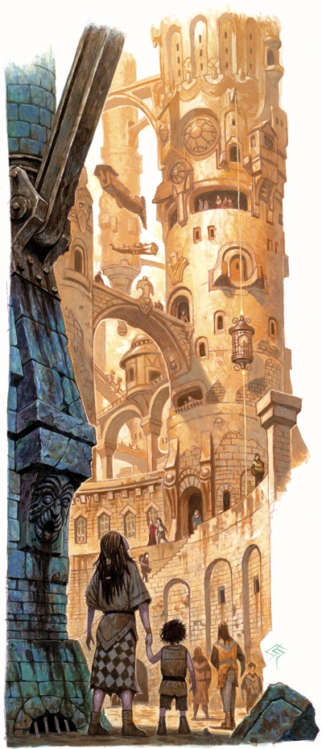
Sharn is the default campaign hub. Built in a manifest zone linked to Syrania (the plane of azure sky), the city's towers stretch miles into the air. It's vertically stratified: the higher you climb, the richer it gets. The Cogs at the bottom are industrial hells. The upper plateaus drip with gold and politics. A chase scene can go from a penthouse restaurant in Upper Menthis to the goblin-run markets of Lower Dura in minutes—straight down. Think noir Coruscant.
Skycoaches — small flying gondolas — are the city's taxis. Bridges connect towers hundreds of feet above street level. The city watch barely patrols below the middle wards, and in the Cogs, law enforcement is a punchline. Every district has a flavour: Morgrave University sits in Upper Menthis, the Bazaar of Dura never sleeps, Tavick's Landing is where refugees queue, and the Depths are where people disappear.
Beneath it all: Sharn is built on top of an ancient Dhakaani goblin city. The deeper you dig, the older the ruins get — and the closer you get to things that were sealed away for a reason.
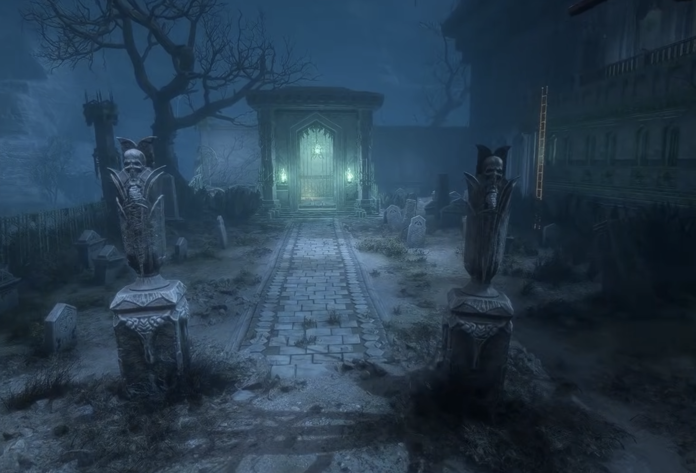
Cold, bleak, martial. Children learn sword drill before letters. Officers are aristocrats. The chain of command is society — Prussia crossed with Ravenloft. Early in the Last War, famine and plague gutted Karrnath. King Kaius I turned to the Blood of Vol for help. The Blood turned Kaius into a vampire and gave Karrnath the tools to raise undead legions: elite necromantic soldiers in dark armour, tireless, disciplined, devastating. Other nations — especially Thrane — never forgave them.
After Thronehold, Kaius III officially decommissioned the legions and sealed them in fortress vaults. Hidden caches remain throughout the nation, maintained by Blood of Vol priests and the outlawed Order of the Emerald Claw. Nobody knows how many are still down there.
Western Khorvaire, carved from land Breland couldn't hold. Medusas, ogres, harpies, gnolls, minotaurs, trolls — all the "monster manual" species, organised into a functioning state by the Daughters of Sora Kell, three hag sisters who seized power about a decade ago. The Treaty of Thronehold doesn't recognise Droaam. The Daughters don't care. They're building legitimacy through trade, mercenary contracts, and the quiet fact that their nation works.
The three sisters: Sora Katra, a green hag, the diplomat and spymaster — she could talk a dragon into a cage. Sora Maenya, an annis hag, the enforcer — raw physical power that keeps warlords in line. Sora Teraza, a dusk hag, blind prophet — she sees the future and may be reading the Draconic Prophecy itself. Together they're arguably the most competent leadership on the continent.
Eberron's factions operate on different scales. Some are mortal organisations jockeying for political advantage. Others are cosmic forces playing games that span millennia. Two of the biggest—the Chamber and the Lords of Dust—are locked in a cold war over the Draconic Prophecy.
The Prophecy isn't a book or a prediction. It's a pattern written into reality itself — encoded in the movement of moons, the lines of dragonmarks, the geology of mountains, the timing of births and deaths. Think of it less as prophecy and more as code: a vast system of if/then statements. "If an innocent catches a falling star, then the kingdom of man will fall." Dragons have spent hundreds of thousands of years studying it. They don't fully understand it. Nobody does.
What they do know: the Prophecy describes possible futures, not fixed ones. Certain events—a specific person being in a specific place at a specific time—can tip the Prophecy in one direction or another. The Prophecy doesn't command—it describes conditions. A mark might read: "When the bearer of the Storm mark stands where the bridge of fire fell, the imprisoned voice speaks again." Neither the mark nor the voice have opinions about whether this is good. The players who unwittingly fulfil the condition might never know what they set in motion.
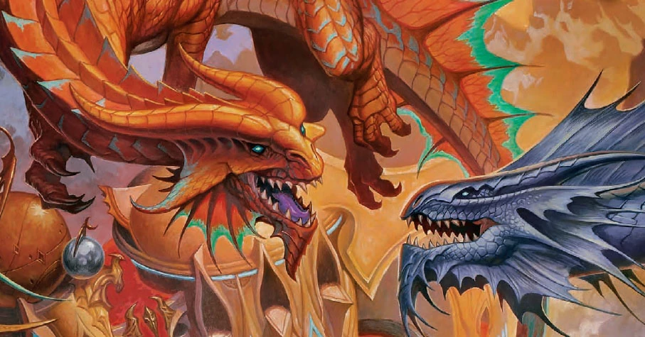
The Progenitor myth didn't end when Eberron imprisoned Khyber. The children of those dragons—the true dragons of Argonnessen and the fiends born from Khyber's darkness—have been fighting a cold war over the Prophecy ever since. This is the deepest layer of Eberron's conspiracy stack, and it makes everything else look like local politics.
The Chamber is the dragon faction that actively meddles in mortal affairs. They send agents—often polymorphed into humanoid form—to steer events toward prophetic outcomes they consider "safe." A Chamber dragon might spend decades posing as a university professor, a merchant, or a minor noble, positioning mortal pawns for a single moment fifty years in the future. They are patient, brilliant, and utterly indifferent to the collateral damage their plans cause. If a city has to burn to prevent an Overlord from waking, the Chamber will light the match.
The Lords of Dust are the fiendish counterpart. Rakshasa—ancient, cunning, practically immortal—who survived the Age of Demons and now work to free the Overlords: godlike fiends imprisoned in Khyber at the dawn of the world. Each Overlord embodies a concept—the Rage of War, the Voice in the Darkness, the Keeper of Secrets. They aren't locked in dungeons; they're sealed by the Prophecy itself, bound by specific conditions that the Lords of Dust spend millennia trying to unravel. A rakshasa infiltrator might hold a position of power for centuries, nudging events one careful step at a time toward the moment a seal weakens.
Between these two forces, mortal civilisation is a game board. The Chamber and the Lords of Dust don't fight each other directly—they fight through events, through the mortals who unknowingly fulfil or prevent prophetic conditions. Your party could be the key piece in a gambit that started before humans existed on Khorvaire.
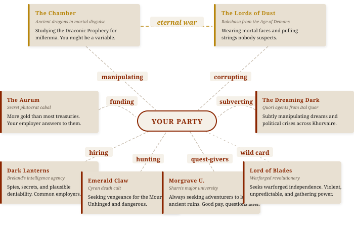
| Faction | Who They Are | What They Want | Useful As |
|---|---|---|---|
| The Aurum | Secret society of the ultra-wealthy across all nations | Control through gold; reshape post-war order to serve plutocrats | Shadowy patrons, puppet-masters |
| The Chamber | Ancient dragons (in disguise) who study the Draconic Prophecy | Steer mortal events to fulfil or prevent prophetic outcomes | Cosmic-scale manipulation; the longest game |
| The Lords of Dust | Rakshasa and fiends, survivors of the Age of Demons | Free the imprisoned Overlords and return the world to fiendish rule | BBEG material; hidden infiltrators in positions of power |
| The Dreaming Dark | Quori—psychic entities from Dal Quor, the plane of dreams | Maintain control of Dal Quor by keeping mortals docile and fearful | Psychic horror; the Inspired of Riedra; Kalashtar hooks |
| The Emerald Claw | Militant cult loyal to the lich-queen Vol, banned from Karrnath | Karrnathi supremacy, mass undeath, Vol's personal apotheosis | Undead-themed antagonists with political connections |
| The Dark Lanterns | Breland's intelligence service, answering to King Boranel | Protect Breland's interests; pre-empt threats; spy on everyone | Spy missions; morally grey employers who pay well |
| Morgrave University | Sharn's university—academically disreputable, adventurously prolific | Acquire relics first, publish papers later, ethics optional | Quest-givers; "we need this relic and won't ask how you got it" |
| The Lord of Blades | A warforged supremacist leader hiding in the Mournland | Build a warforged nation; destroy or subjugate the "fleshborn" | Warforged villain or anti-hero; Mournland expedition hook |
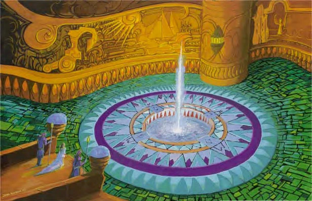
Eberron's gods do not demonstrably intervene. Clerics get power, but nobody has met the Sovereign Host at dinner. This means faith is genuine belief, not confirmed fact—and the setting is better for it.
| Faith | Nature | Tension |
|---|---|---|
| The Sovereign Host | Pantheon of nine gods covering every domain — war, crafts, nature, trade, the lot. Most common faith in Khorvaire, woven into daily life the way casual religion is in the real world. | Nobody has ever met a Sovereign. Faith is genuine belief, not verified fact. Some priests wonder if they're praying to anything at all. |
| The Dark Six | Six gods rejected from the Sovereign Host — the Mockery, the Fury, the Keeper, and more. Worshipped openly in some cultures, furtively in others. Their followers aren't necessarily evil. | Where do you draw the line between honouring the Traveller's chaos and being a dangerous cultist? The Dark Six test moral assumptions. |
| The Silver Flame | Not a god but a force — a literal pillar of silver fire in Flamekeep that imprisoned ancient fiends. The Church of the Silver Flame is Eberron's most organised religion, with templars, inquisitors, and political power. | The institution is corrupt and fallible, but the Flame itself is real. Zealots burned lycanthropes in purges. Good people serve a flawed church — classic Eberron grey. |
| The Blood of Vol | Believes divinity lies within mortal blood, not in distant gods. Seeks to conquer death through understanding it. Practices blood rituals and reveres the undead as those who have "moved beyond." | Outlawed in most nations and associated with Vol the lich-queen, but rank-and-file followers are ordinary people looking for meaning. The faith itself isn't evil — its figurehead might be. |
| The Path of Light | Kalashtar philosophy. Teaches that a golden age will come through meditation, compassion, and resisting the Dreaming Dark's psychic corruption. Patient, gentle, and deeply alien to most Khorvairians. | It's a real struggle against a real enemy — the quori — but most people just see it as weird monks doing weird things. The kalashtar carry this burden mostly alone. |
| The Cults of the Dragon Below | Loose, chaotic cults worshipping daelkyr (alien lords imprisoned in Khyber), aberrant powers, or eldritch things that whisper from below. No central organisation; each cult is different and usually dangerous. | Excellent villain material, but some cults are more pathetic than threatening — desperate people reaching for any power that will listen. Not all of them know what they're actually serving. |
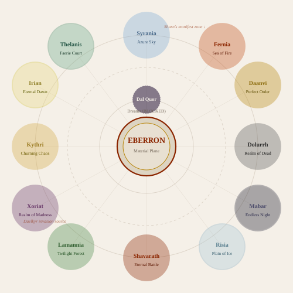
Eberron was designed around the idea that the party shares a patron—an organisation, individual, or institution that gives them work, a reason to be together, and a built-in story engine. This is the session zero question that replaces "so how do your characters meet in a tavern?"
| Patron | Vibe | What You Do |
|---|---|---|
| King's Citadel | Spy thriller | Espionage, counter-intelligence, and dirty work for Breland's crown |
| Morgrave University | Pulp adventure | Relic-hunting expeditions to Xen'drik and ancient ruins, ethics optional |
| The Sharn Inquisitive | Noir journalism | Investigate stories, chase leads, expose corruption—and survive it |
| Dragonmarked House | Corporate thriller | Fix problems for the house, quietly—deals, acquisitions, rival sabotage |
| Clifftop Adventurers Guild | Classic adventuring | Take jobs off the board, build reputation, earn guild rank in Sharn |
| Church of the Silver Flame | Holy crusade / moral grey | Hunt fiends, protect the innocent—but the church's agenda isn't always pure |
| Criminal Syndicate | Heist / underworld | Boromar Clan, Daask, or House Tarkanan—everyone needs professionals |
| Cyran Survivor Network | Refugee resistance | Recover Cyran relics from the Mournland, protect refugees, find answers |
Eberron uses standard D&D currency (cp, sp, gp, pp), but the economic context matters. Khorvaire is a post-industrial magical society—people have jobs. Prices reflect that.
| Thing | Cost |
|---|---|
| Magewright's daily wage | 2 gp |
| Common labourer's daily wage | 1 sp |
| Skycoach ride across Sharn | 1 sp |
| Lightning Rail ticket (Sharn→Wroat) | ~5 gp (standard), ~15 gp (first class) |
| Night at a Ghallanda inn (decent) | 5 sp |
| Korranberg Chronicle (daily paper) | 1 cp |
| Healing at House Jorasco (basic) | 25–50 gp |
| Sending message via House Sivis | ~2 gp per message |
| Identification papers (legal) | 2 gp |
| Identification papers (forged) | 50+ gp |
Eberron campaigns hit different when you lean into the setting's strengths. The best sessions feel like a mashup of genres:
| Genre | Eberron Expression |
|---|---|
| Noir detective | Inquisitives in Sharn; who killed the House heir? |
| Espionage thriller | Dark Lanterns, Trust, inter-nation spy games |
| War story | Flashbacks to the Last War; trauma, PTSD, unresolved guilt |
| Heist | Steal from a Kundarak vault; rob the Lightning Rail |
| Political intrigue | Succession crises, House maneuvering, Treaty violations |
| Pulp adventure | Xen'drik expeditions; ancient giant ruins; cursed relics |
| Horror | The Mournland; daelkyr corruption; Dreaming Dark; aberrant marks gone wrong |
| Conspiracy thriller | The Chamber, Lords of Dust, and Dreaming Dark all run long games. Who's pulling your patron's strings? |
| Social drama | Warforged personhood, Cyran refugees, dragonmark prejudice — Eberron does marginalisation as worldbuilding |
| Disaster movie | Manifest zones destabilising, bound elementals breaking loose, a second Mourning? |
| Journalism & media | The Korranberg Chronicle, propaganda, public opinion — the party's reputation is a resource |
| Frontier survival | Q'barra jungle, Demon Wastes, Mournland expeditions — civilisation is far away |
What makes a scene feel like Eberron instead of generic fantasy? Roll a d12, or pick whichever fits the moment.
| Element | What It Means at the Table |
|---|---|
| Manifest Zone | A place where Eberron physically overlaps with another plane. In a Shavarath zone weapons feel lighter and aggression spikes; in a Mabar zone light dims and healing falters; in an Irian zone everything glows faintly golden. You don't travel to the plane — the plane leaks into you. Great for making a mundane location suddenly feel alien without leaving the map. |
| House Agent | An employee of a dragonmarked house. Cannith makes things, Jorasco heals, Orien moves people, Thuranni kills people quietly. An agent showing up means their house wants something here — they'll be polite about it right up until you're in the way. |
| Magitech Breaks | What happens when the fantasy industrial revolution has a bad day. The Lightning Rail, sending stones, everbright lanterns, bound elementals — when any of it malfunctions, a loose fire elemental is not a tech support ticket. |
| Last War Scar | The war ended two years ago and nobody won — it stopped because the Mourning annihilated an entire nation and everyone signed a treaty out of terror. Veterans are bitter, borders contested, old weapons sit in fields waiting to activate. |
| Aberrant Mark | The wrong kind of dragonmark. Normal marks come through bloodlines and do predictable things. Aberrant marks appear randomly, hurt their bearer, and do unpredictable, often destructive things. House Tarkanan collects people with aberrant marks. Society fears them. An NPC whose mark is "doing too much" is a ticking bomb that also has feelings about it. |
| Warforged Identity | Sentient constructs built as disposable soldiers. The Treaty gave them personhood — but two years of legal rights doesn't erase thirty years of being property. They don't sleep, don't eat, many don't have names. "What am I for now?" is an instant story hook. |
| Morgrave Find | Morgrave University in Sharn funds treasure-hunting expeditions to Xen'drik, the shattered continent where giants once enslaved the elves. Expeditions go in, sometimes come back, often come back changed. "A Morgrave find" means someone dug up something they shouldn't have, and now it's loose in civilisation. |
| Dreaming Dark | The quori — psychic entities from Dal Quor, the plane of dreams — can't physically enter Eberron, so they possess willing hosts called the Inspired, who rule Sarlona. On Khorvaire they operate through sleeper agents and manipulated dreams. The scary part is subtlety: the NPC acting slightly off might not know they're compromised. |
| Prophecy Fragment | The Draconic Prophecy isn't a prediction, it's a pattern — written in the land itself, in the movement of moons, in dragonmarks, in events. Dragons spend millennia interpreting it. The Chamber and the Lords of Dust both try to steer it. A prophecy fragment showing up means something cosmically significant is happening here, even if nobody at the table understands it yet. |
| Trust No One | Eberron's two great shapeshifter threats. Changelings are a player race — most just want to live their lives, but some exploit their gift. Rakshasas are ancient fiends who occasionally slip free, take a pleasing form, and play very long games. The person you're talking to might not be the person you think — and in Eberron, that paranoia is the point. |
| Dragonmark Rivalry | The houses maintain a polite fiction of cooperation, but beneath the surface they compete ferociously. Cannith's three factions fight over the house's future. Phiarlan and Thuranni are in a cold war of espionage and assassination. Orien resents Lyrandar for stealing the airship market. Every inter-house tension is a quest hook waiting to happen. |
| The Newspaper | The Korranberg Chronicle is a real, mass-produced newspaper. Actions have public consequences. If the party causes a scene, someone writes about it. If a noble dies, the headline changes the political landscape. Information travels fast in Eberron, and reputation matters. Let the players see their deeds in print — flattering or otherwise. |